How Burp Suite Intercepts HTTPS: TLS, CA Certificates, On-the-Fly Certificates and Two TLS Sessions
Deep technical explanation of how Burp Suite intercepts HTTPS: CONNECT, TLS termination, Burp CA, per-host certificates, SNI, ALPN, HTTP/2, pinning, passthrough, invisible proxying and mTLS.
Your browser normally establishes TLS directly with the origin. The two TLS endpoints are the browser and shop.test. Ciphertext on that path is only useful to those two parties.
If Burp wants HTTP-level visibility, it cannot sit inside that existing session. It is not an endpoint of it. Encrypted records between two other endpoints stay encrypted.
So Burp becomes an endpoint.
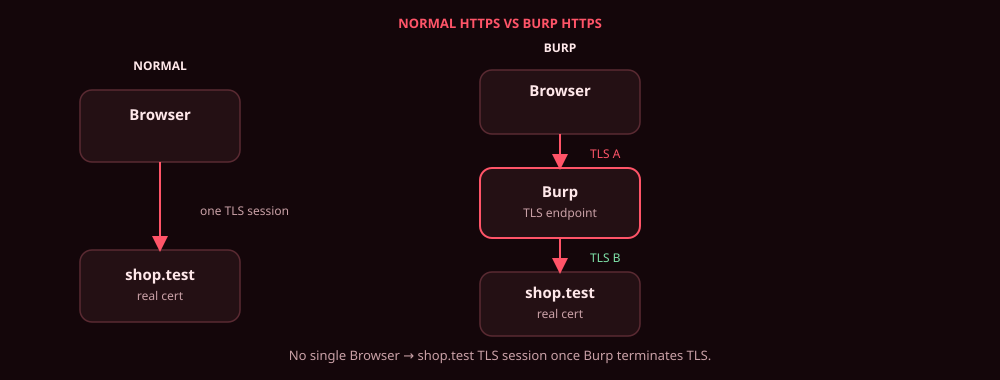
1. The two sessions
Normal
Browser ──── TLS ──── shop.test
With Burp as an intercepting proxy
Browser ──── TLS session A ──── Burp ──── TLS session B ──── shop.test
HTTP plaintext only here
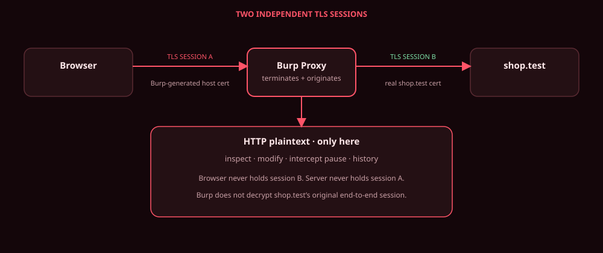
| Hop | Endpoints | Certificate presented to the TLS client | Cryptographic state |
|---|---|---|---|
| A | Browser ↔ Burp | Burp-generated per-host certificate for shop.test, issuer = Burp CA |
Independent handshake; traffic secrets derived for this connection only |
| B | Burp ↔ origin | The real shop.test certificate |
A second, independent handshake; different traffic secrets |
The origin never sees the per-host certificate. The browser never holds the origin private key. Burp does not need that private key: it is not decrypting an original Browser → origin TLS session. It terminates session A and establishes session B. Those connections have independent cryptographic state.
Diagrams in this article still label the hops A and B (and sometimes “session keys A/B”) as a teaching shorthand. In modern TLS those are derived traffic secrets / keys, not a single AES key shipped across the wire.
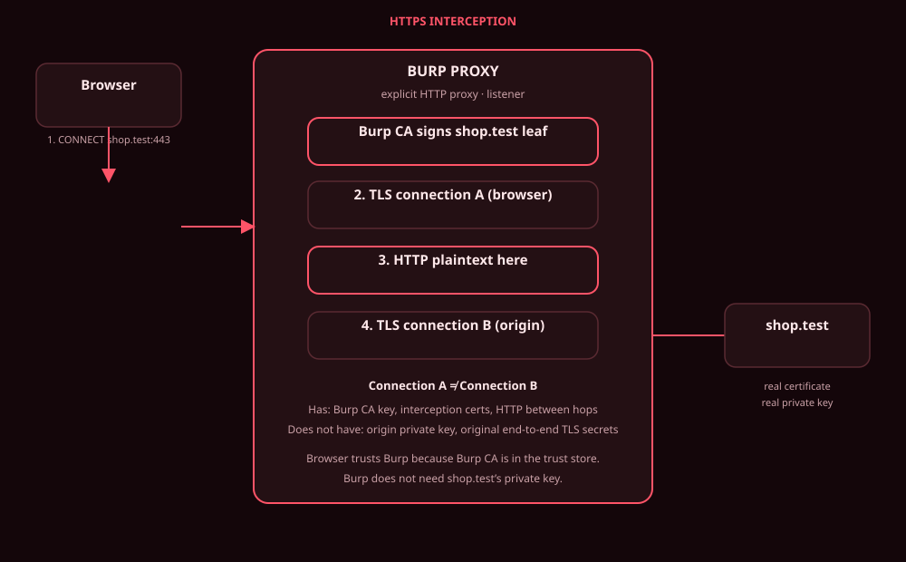
2. Before TLS: listener, CONNECT, SNI
The browser is pointed at the proxy listener (default 127.0.0.1:8080). That is an explicit HTTP proxy, not TLS itself, and not (by default) a transparent bump-in-the-wire.
CONNECT is a proxy mechanism. It is not a TLS message and it is not sent to shop.test. With an explicit HTTP proxy, the browser first sends an HTTP CONNECT request to the proxy. After the proxy responds with 200 Connection Established, the browser begins the TLS handshake through that same TCP connection to Burp.
Browser
|
| HTTP CONNECT shop.test:443 ← to Burp, not to the origin
v
Burp
|
| 200 Connection Established
|
| TLS ClientHello ← TLS starts here
v
Burp (TLS endpoint for this hop)
CONNECT shop.test:443 HTTP/1.1
Host: shop.test:443
Meaning: “proxy, open a TCP tunnel toward that host:port.” Burp replies:
HTTP/1.1 200 Connection Established
From the browser’s TLS perspective, Burp is the TLS endpoint for this connection. The browser requested shop.test. Burp terminates that TLS connection and presents a certificate for shop.test, signed by Burp’s CA. The browser then validates that certificate against its trust store (is Burp CA a trusted root?) and the hostname (does the leaf name shop.test?). It does not accept “whoever answered” without that validation.
The TLS ClientHello can contain the Server Name Indication (SNI) extension, which normally carries the hostname the client intends to reach. SNI is a TLS extension, not a mandatory generic field. It may be absent (older stacks, some privacy modes, some non-browser clients).
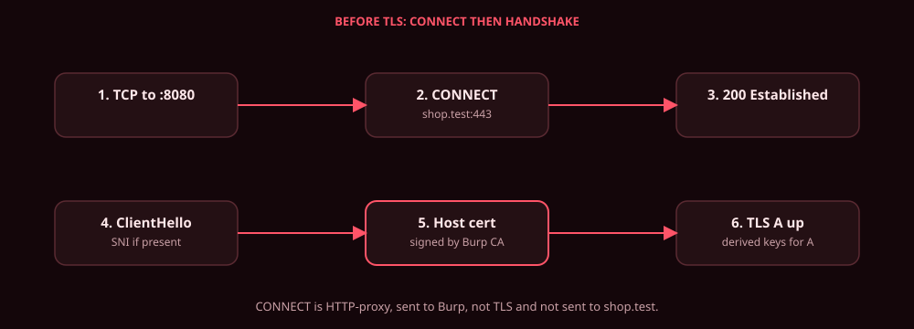
Plain HTTP on an explicit proxy never sends CONNECT. The browser sends GET http://shop.test/… (absolute-form) to :8080 and Burp forwards it. The rest of this article is the HTTPS intercept path. Invisible proxying (no CONNECT) is §16.
3. Burp CA
On first run, an installation of Burp generates one CA certificate and key, stored locally, reused across hosts and sessions until you regenerate or import another.
Burp CA (self-signed, once per installation)
├── signs certificate for shop.test
├── signs certificate for api.shop.test
└── signs certificate for auth.shop.test
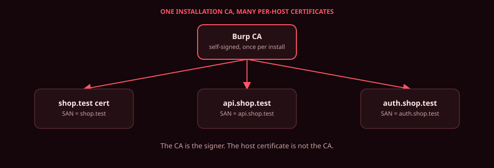
- CA = trusted signer. Public key in the testing browser/device trust store. Private key signs child certificates. That private key is the dangerous object (see the CA-key section later).
- Per-host certificate = not the CA. It is a leaf that names
shop.test(SAN/CN) and is issued by the Burp CA.
Burp does not create a new CA per site. Default listener mode: Generate CA-signed per-host certificates.
The testing browser trusts the Burp CA (Burp’s own browser ships that way; an external browser only intercepts cleanly after that CA is a trusted root). Trusting a CA means: “I will accept leaves this CA signs, if the rest of validation passes.”
4. On-the-fly per-host certificate
Visit https://shop.test/account. After CONNECT / SNI identify shop.test, Burp generates (or reuses a cached) certificate:
| Field | Value |
|---|---|
| Subject / SAN | shop.test |
| Issuer | Burp CA |
| Public key | key pair Burp generated for this host |
| Signature | over the leaf, using Burp CA private key |
This is not “Burp signs the origin’s real certificate.” The origin leaf is never in this chain. Burp generates a certificate representing shop.test and signs that certificate with Burp CA.
Real world: shop.test leaf ← public CA ← browser trust store
Interception: Burp leaf for shop.test ← Burp CA ← browser trust store
The browser accepts the Burp leaf because it can build a chain to a trust anchor it has, the name matches, dates/signatures work. It is not verifying “this is the same leaf DigiCert issued for shop.test.”
People call it a “fake certificate” as shorthand. Accurate name: Burp-generated per-host certificate. It is a real X.509 object. It is not the origin’s certificate.
If the client never sent CONNECT (invisible proxy), Burp may still take the name from SNI when that extension is present. If SNI is absent, default per-host generation cannot know the name in time; PortSwigger documents falling back to a static self-signed cert, or configuring a CA-signed certificate with a specific hostname on that listener.
5. What the browser actually checks
leaf for shop.test
│ signed by
▼
Burp CA
│ present in
▼
browser trust store
Validation (simplified, still the right model):
- hostname vs SAN/CN
- not-before / not-after
- signature over the leaf using the issuer public key
- chain to a trusted anchor
- basic constraints / key usage as implemented by the stack
It is not checking “byte-for-byte identical to the origin cert.”
6. Which keys are involved
Do not conflate these.
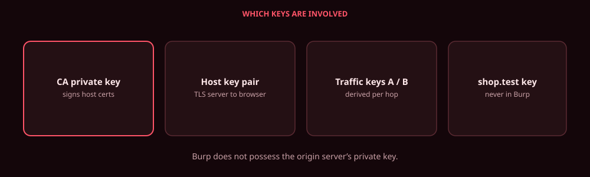
A. Burp CA private key
Signs dynamically generated host certificates. Long-lived, on disk, unique per install unless imported.
B. Per-host key pair
Burp uses this as the TLS server toward the browser (session A). Generated for the host (implementation may cache).
C. TLS traffic secrets / keys (per connection)
The handshake establishes shared cryptographic secrets from which traffic-encryption keys are derived. Session A and session B each do this independently. Labels “key A / key B” in diagrams mean those derived keys for that hop - not a single AES key copied off the origin.
D. Origin server private key
Stays on shop.test. Burp does not need it to open session B. Burp is not decrypting an original Browser → origin TLS session; that session was never the path.
6b. TLS 1.2 vs TLS 1.3 - why “session key” is a teaching model
The A/B picture is the right architecture. The cryptography under it is a bit richer.
TLS 1.2 supports several handshake / key-exchange modes. Historically that included RSA key transport; modern secure deployments generally prefer ephemeral Diffie-Hellman ((EC)DHE).
TLS 1.3 uses ephemeral Diffie-Hellman-style key agreement, derives traffic secrets through the handshake, and does not simply send an AES session key over the network. Ephemeral key exchange is why you get forward secrecy: stealing the long-term private key later does not unwind past traffic that used ephemeral secrets.
Burp, as a TLS endpoint on A and as a TLS client on B, participates in whatever handshake the peer negotiates (within the protocols the listener / Java TLS settings allow). That is still termination + new connection, not “extracting the origin’s session key.”
6c. Conceptual handshake on session A (not a packet capture)
Browser requested shop.test. Burp terminates that TLS connection and presents a Burp-generated certificate for shop.test, signed by the trusted Burp CA. The browser validates chain + hostname + time + signatures against its trust store.
Browser Burp
| |
|------ ClientHello --------------->| SNI=shop.test (if present)
| ALPN=h2, http/1.1 (typical) |
| |
|<----- ServerHello ----------------|
|<----- Certificate ----------------| per-host leaf, issuer = Burp CA
|<----- key-exchange data ----------| conceptual (1.2 vs 1.3 differ)
|------ Finished ------------------>|
|======= encrypted HTTP ===========>|
This is only Browser ↔ Burp. Burp then performs a separate TLS handshake with the destination (session B). The message list above is a conceptual flow, not a TLS 1.3 wire specification.
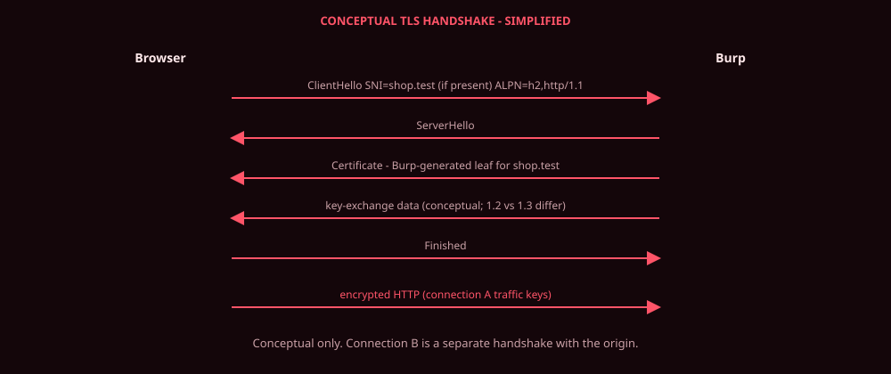
7. Request timeline (https://shop.test/account)
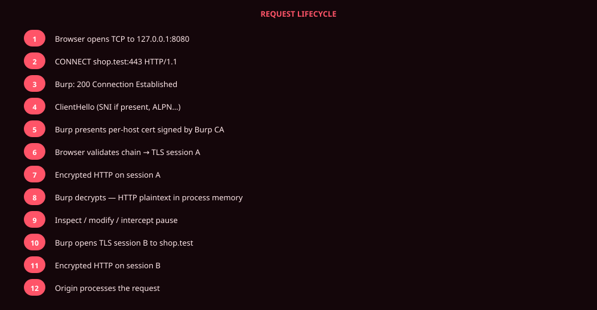
- Browser TCP-connects to the proxy listener.
CONNECT shop.test:443.200 Connection Established.ClientHello(SNI=shop.testif present; ALPN may listh2,http/1.1).- Burp presents the per-host leaf (issuer Burp CA).
- Browser validates the chain; handshake completes; session A exists.
- Browser sends HTTP encrypted under A.
- Burp decrypts because Burp is the TLS server for A.
- HTTP is in process memory:
GET /account HTTP/1.1
Host: shop.test
Cookie: session=abc123
Authorization: Bearer eyJ…
- Inspect / modify / Intercept pause.
- Burp completes (or reuses) session B to the origin; origin shows its real cert; Burp validates it per TLS settings.
- Burp sends the (possibly edited) HTTP encrypted under B.
- Origin handles it as a normal TLS client request.
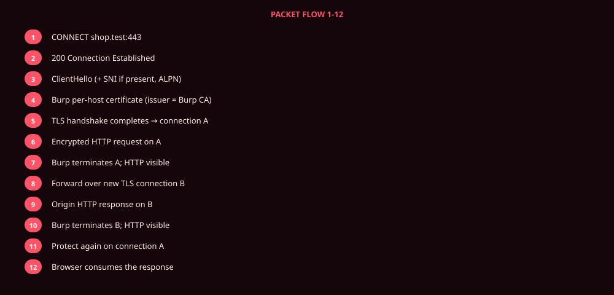
8. Intercept ON vs OFF
ON: decrypt A → pause in Intercept → optional edit → encrypt B.
OFF: decrypt A → automatic forward → encrypt B.
Repeater / Intruder / Logger consume the same plaintext after step 8. They are not extra TLS tunnels.
9. What can be modified, and why
Because the object in memory is HTTP (or Burp’s HTTP/2 representation), you can change method, path, query, headers, cookies, body, Authorization, and Burp can rewrite Content-Length after body edits. That is possible only after session A is terminated. You cannot do it on TLS passthrough.
10. Response path
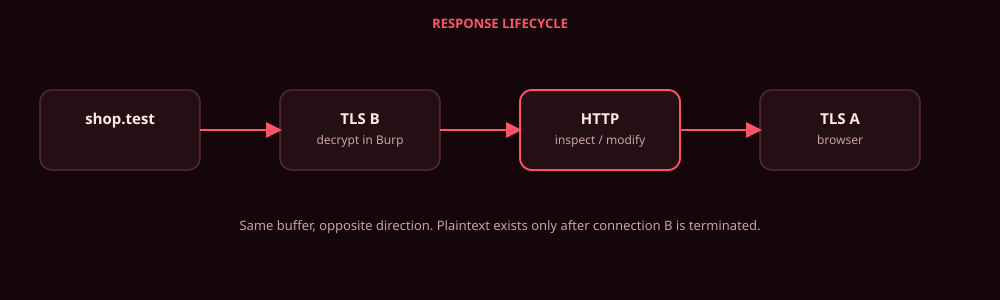
shop.test --B--> Burp [HTTP] --A--> Browser
Example after decrypt B:
HTTP/1.1 200 OK
Content-Type: application/json
{"username":"abhiram","role":"user"}
Same rules: Intercept can pause responses; match-and-replace can rewrite them; the browser only ever sees records protected by session A’s derived traffic keys.
11. How Burp verifies the real server
Browser
|
| validates Burp-generated per-host certificate
| (hostname, chain, signature, trust anchor = Burp CA)
v
Burp
|
| validates the origin’s real certificate
| (chain/trust, hostname, validity - per Burp TLS settings)
v
shop.test
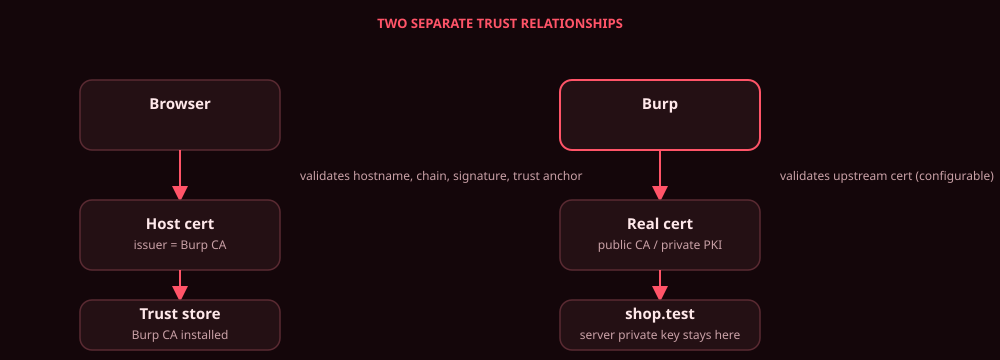
Browser → Burp (session A): the browser requested shop.test. It validates a Burp-generated certificate for that hostname, with a chain that terminates at the Burp CA in its trust store.
Burp → origin (session B): Burp establishes a separate TLS connection. It validates the target certificate according to its configured TLS verification (typically chain/trust, hostname, validity). Custom/enterprise CAs can be added in Burp TLS settings.
Burp does not need the target server’s private key to establish session B. It is a TLS client on that hop.
Failure of B (expired origin cert, name mismatch, unknown issuer) is an upstream problem. Session A might already be up; what the browser sees is a failure from Burp, not “the browser rejected the origin’s leaf.”
11b. Why this does not mean anyone can MITM HTTPS
An attacker can generate an attacker CA and sign a leaf for shop.test. That is the same shape as Burp. It fails in a normal browser because the attacker CA is not in the trust store.
Burp works in a test environment because you explicitly trust Burp’s CA (or use Burp’s browser, which already does). The browser does not trust Burp “because the certificate looks legitimate.” It trusts Burp because the Burp CA was added as a trust anchor.
Burp CA trusted Attacker CA not trusted
| |
+-- signs --> shop.test leaf +-- signs --> shop.test leaf
| |
v X
browser accepts certificate validation failure
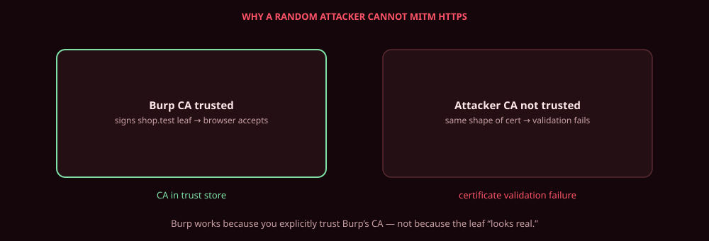
12. SNI (TLS extension, not always present)
The TLS ClientHello can include the SNI extension (server_name), which normally carries the hostname the client intends to reach. It is not a required field of every ClientHello.
On an explicit-proxy path you already had CONNECT. SNI still matters for choosing which leaf to present, for origin virtual-hosting on session B, and especially for invisible mode where CONNECT never happened. If SNI is absent, Burp cannot take the name from TLS and must use CONNECT (explicit proxy), Host after decrypt, a listener configured with a specific hostname cert, or a fallback self-signed leaf - see invisible proxying.
13. ALPN: which HTTP runs inside TLS
ALPN (Application-Layer Protocol Negotiation) is a TLS extension. Typical offers: h2 (HTTP/2), http/1.1. The TLS server on that hop selects one. Protocol negotiation is part of the TLS handshake, not a later HTTP trick.
TLS
├── ALPN: h2 → HTTP/2 on that hop
└── ALPN: http/1.1 → HTTP/1.1 on that hop
Burp terminates session A and originates session B. Those handshakes are logically independent. Do not assume the browser and the origin negotiated the same protocol “through” Burp.
PortSwigger: by default Burp speaks HTTP/2 to servers that advertise it via ALPN on the Burp → origin hop (Settings → Network → HTTP → “Default to HTTP/2 if the server supports it”). Independently, each proxy listener can allow or deny HTTP/2 on client → Burp. Those are not the same toggle.
Burp does not implement every HTTP/2 feature (e.g. server push is documented as unsupported). It can show HTTP/2 in a readable view while the wire hop is still HTTP/2.
Why Product Security cares: pseudo-headers, multiplexing, translation between h1 and h2, and classes of desync that only exist when the two hops disagree. That is not a smuggling tutorial; it is why protocol identity is part of interception, not an afterthought.
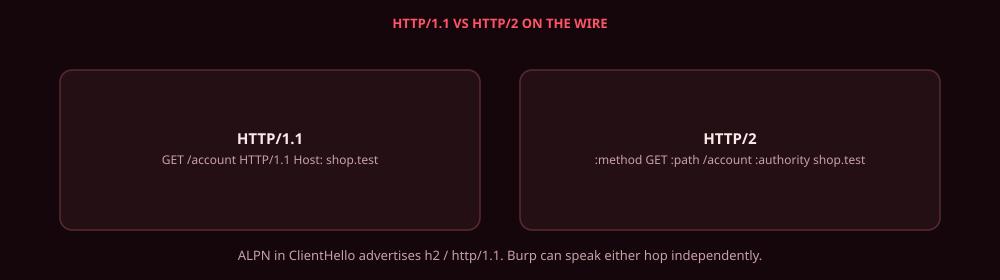
HTTP/1.1 HTTP/2 (conceptual)
GET /account HTTP/1.1 :method = GET
Host: shop.test :path = /account
:scheme = https
:authority= shop.test
HTTP/2 is not “the same bytes with a different name.”
14. Certificate pinning
Normal browser trust (what installing Burp CA buys you):
Browser → platform trust store → Burp CA is a trust anchor
→ Burp-generated leaf for shop.test chains to that CA
→ hostname matches → accept
Pinning is usually an application-level extra check, not “the browser stopped trusting CAs.” Implementations differ: some pin a certificate, some pin a public key / SPKI. Do not claim every app uses one mechanism.
Application
→ expected cert or public key (baked in)
→ Burp leaf / SPKI does not match
→ connection rejected
Trusting Burp CA is necessary for intercept in a normal browser TLS stack and not sufficient when the app pins. High-level lab options: debug build with pin off, instrumented/jailbroken client, or TLS passthrough for that host. Pinning is not the same statement as “the CA isn’t trusted.”
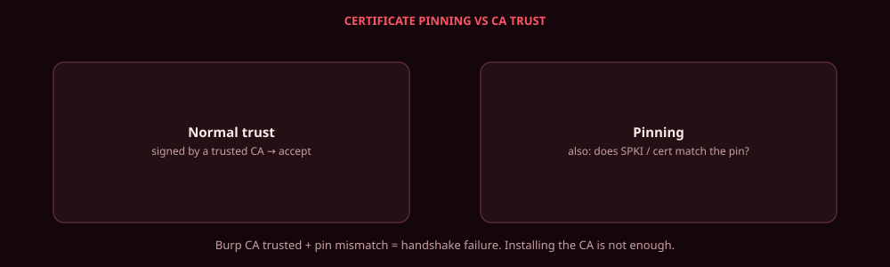
15. TLS passthrough
Opposite of termination.
Interception
Browser -- encrypted TLS A --> Burp [HTTP plaintext] -- encrypted TLS B --> origin
Burp is a TLS endpoint on A, so it can inspect/modify HTTP, then wrap a new TLS session B.
Passthrough
Browser -- encrypted TLS --> Burp/network layer -- same encrypted TLS stream --> origin
True passthrough forwards records. Burp does not terminate the client TLS session, does not present a Burp-generated leaf for that hop, and therefore cannot see or modify HTTP. No HTTP history of bodies, no Intercept.
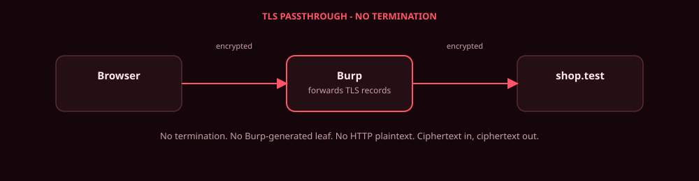
Use it for pinned hosts, fingerprint-sensitive origins (upstream can see the browser’s TLS fingerprint rather than Burp’s), or performance. PortSwigger: add hosts, or apply passthrough to out-of-scope items.
16. Invisible proxying
Explicit HTTP proxy (normal browser config):
Browser -- CONNECT --> Burp -- TLS A / HTTP / TLS B --> origin
CONNECT is how the client names the destination before TLS.
Invisible proxying is not “another checkbox in Chrome.” It is a network / traffic-redirection setup for clients that are not HTTP-proxy-aware (thick clients, some plugins). The client believes it is talking to shop.test:443. DNS/hosts (or equivalent) sends that TCP to a Burp listener in invisible mode. There is no CONNECT. The first bytes may already be TLS.
Burp still has to decide destination and certificate name from whatever is available: destination address of the redirected connection; after TLS starts, SNI if present; after decrypt, the HTTP Host header. Invisible proxying does not always depend on SNI, and SNI is not always present.
If the name is unknown before ServerHello, PortSwigger documents a static self-signed fallback, or configure the listener to generate a CA-signed certificate with a specific hostname. Outbound must not resolve back to the same listener (loop) - force outbound to the real IP, or override Burp hostname resolution.
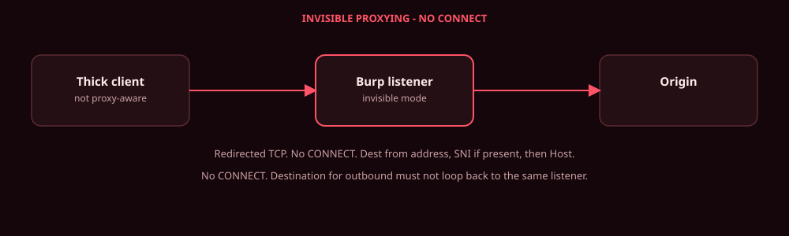
17. WebSockets
TLS (A) carries HTTP; then:
GET /ws HTTP/1.1
Upgrade: websocket
Connection: Upgrade
101 then frames, not a new CONNECT. Burp can hold client→server and server→client messages (scope rules apply). Product Security cares because authz, tampering, and business logic often live only on the socket after the HTTP handshake looked boring.
18. mTLS
Server cert: origin proves itself to the client (on hop B, “client” is Burp).
mTLS: origin also requests a client certificate. The browser’s client cert is on hop A; it does not automatically appear on hop B.
Burp can present client certs upstream (Settings → Network → TLS → Client TLS certificates, PKCS#12 .p12 or PKCS#11, host wildcards). First matching rule wins. Internal APIs fail handshake if Burp has no client cert to offer.
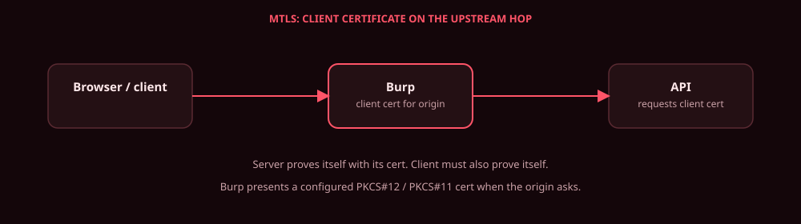
19. Failure modes
| Problem | What you see | Why |
|---|---|---|
| Burp CA not in trust store | Browser warning / fail | Chain does not reach a trust anchor |
| Certificate pinning | App aborts TLS | Extra SPKI/cert check failed |
| Upstream cert invalid | Burp cannot complete B | Burp’s validation of origin failed |
| TLS version/cipher mismatch | Handshake fail on A or B | Listener TLS protocols vs peer |
| Client is not proxy-aware | CONNECT never arrives | Need invisible mode + DNS |
| No CONNECT, no SNI | Wrong or self-signed leaf | Name unknown before ServerHello |
| HTTP/2 mismatch | Odd failures / need to pin protocol | Listener h2 ≠ origin h2, or broken h2 impl |
| mTLS | Upstream handshake fail | Origin asked for a client cert Burp didn’t send |
| Passthrough host | Empty HTTP view | By design: no termination |
20. Things people get wrong
| Wrong | Correct |
|---|---|
| “Burp decrypts shop.test’s TLS connection.” | Burp terminates session A and creates session B. |
| “Burp sends its per-host cert to the origin.” | That leaf is presented to the browser. Origin sees Burp as a TLS client. |
| “Burp creates a new CA per site.” | One CA; many per-host leaves. |
| “Trusting Burp CA gives Burp the origin private key.” | It does not. Different key, different session. |
| “Intercept OFF means not proxying.” | TLS A/B still run; no pause. |
| “TLS is broken.” | TLS is terminated and re-established at the proxy. |
| “SNI is how the proxy is selected.” | Explicit proxy is selected by browser proxy config. SNI, when present, names the TLS host. |
| “SNI is always in ClientHello.” | SNI is an optional TLS extension. |
| “CONNECT is part of TLS.” | CONNECT is an HTTP proxy method. TLS starts after 200. |
| “Burp gets the server’s session key.” | Session B has its own derived traffic secrets. |
| “The browser trusts Burp because the cert looks legitimate.” | The Burp CA is in the trust store. |
| “Pinning means the browser doesn’t trust the CA.” | Pinning is usually an app-level extra identity check. |
| “HTTP/2 is only a UI setting.” | ALPN on each hop independently. |
21. Security implication of the CA private key
Anyone who has the Burp CA private key, plus a victim that trusts that CA, can mint leaves for arbitrary names and run the same two-session attack without your consent. PortSwigger: do not disclose that key; a holder may intercept HTTPS even when you are not running Burp.
Treat the CA material as a lab root. Don’t copy it to shared disks. Rotate (Regenerate CA certificate) if it leaked. This is the same class of risk as any corporate SSL-inspection root - narrower, because the trust anchor is usually only on your test browser.
22. Worked example
https://shop.test/account, proxy 127.0.0.1:8080, Intercept off, Burp CA trusted, no pin.
CONNECT shop.test:443→200.ClientHello(SNI=shop.testif present).- Leaf
SAN=shop.test, issuer Burp CA, presented on A. - Browser chains leaf → Burp CA → trust store. Session A up.
GET /accountarrives encrypted on A; Burp decrypts; Cookie visible.- Session B: origin leaf from the public CA; Burp validates;
GET /accountsent on B. - JSON response on B; Burp decrypts; re-encrypts on A; browser renders.
Change Intercept ON at step 5 and the same bytes wait for Forward. TLS did not change. The pause did.
Mental model (keep this)
HTTPS Interception
Browser
|
| 1. CONNECT shop.test:443 (explicit HTTP proxy only)
v
Burp Proxy
|
| 2. TLS Session A
| Burp-generated shop.test certificate
|
| 3. HTTP plaintext visible here
|
| 4. TLS Session B
| real shop.test certificate
v
Target Server
Session A ≠ Session B
Burp does not break TLS cryptographically. It terminates one TLS connection and establishes another.
- Browser trusts Burp because the Burp CA was explicitly trusted.
- Origin keeps its genuine certificate and private key. Burp does not need that private key.
- Burp controls: Burp CA private key, dynamically generated interception certificates, TLS state for both connections, and the HTTP plaintext between its two TLS endpoints.
- Burp does not possess: the origin private key, or traffic secrets of an original Browser → origin session (that session is not the path).
How I would explain this in sixty seconds
Burp is an intercepting HTTP proxy. With the browser using the listener, HTTPS hits Burp first. A proxy-aware browser sends CONNECT to open a tunnel to the destination. Burp then terminates the client TLS connection and presents a per-host certificate signed by Burp’s installation CA, which the browser trusts because that CA is in its trust store. That is session A. Burp opens a separate TLS connection to the origin - session B - and validates the real server certificate. HTTP exists as plaintext only between those two sessions, which is how inspect/modify/Intercept work. Burp re-encrypts on each hop. It does not decrypt the origin’s original end-to-end session; it never had that session, and it does not have the origin private key.
Primary references (paraphrased, not copied): Burp Proxy, proxy settings (CA-signed per-host certs, passthrough, listener HTTP/2), managing CA certificates, invisible proxying, HTTP/2, TLS / client certificates.